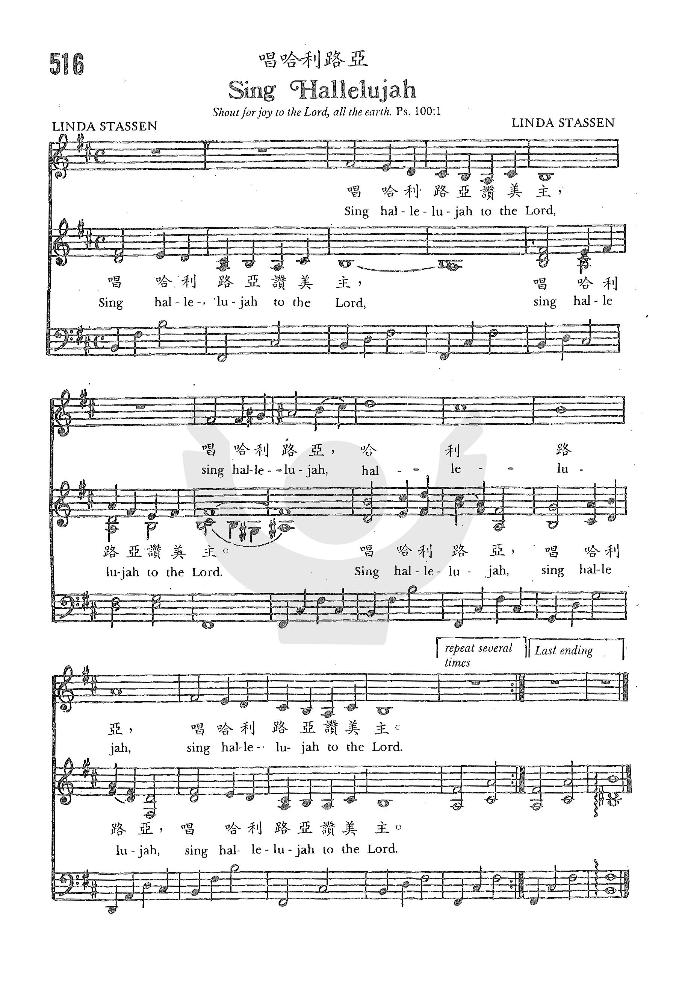

|
|
|
|
Sing Hallelujah to the Lord |
唱哈利路亚赞美主 |
|
https://www.zanmeishige.com/tab/26088.html?songbook=1&index=516

|
|
|
|
|

-
SING ALLELUIA
(Stassen)
-
唱哈利路亚赞美主 Sing Hallelujah to the
Lord
-
27
唱哈利路亚赞美主 Sing Hallelujah to the
Lord
-
唱哈利路亞
-
Sing Hallelujah
天佑我城
0929
Stassen, Linda, 1951-
https://hymnary.org/person/Stassen_L
STASSEN, Linda Lee. b. LaPorte, Indiana,
19 September 1951. Stassen was educated at Ball State University, Muncie,
Indiana, and EI Camino College in Torrence, California. During the 1970s she was
associated with Calvary Chapel, and Maranatha! Music, in Costa Mesa, California,
(see Karen Lafferty*) and sang and recorded for various ensembles such as
‘David’ (1974-75) and ‘New Song’ (1975-77). Her round, ‘Sing alleluia to the
Lord’*, appears in various modern hymnals, usually with additional stanzas.
Texts
by Linda Stassen (2)
Sing
Hallelujah
唱哈利路亞
教會聖詩516
https://hymnary.org/text/sing_alleluia_to_the_lord
詩歌賞析: 《唱哈利路亚》
《唱哈利路亚》[1]（英语：Sing Hallelujah to the Lord，
或译《唱哈利路亚赞美主》[2]）是一首在1974年创作的当代基督教崇拜歌曲（英语：Contemporary
worship music），由琳达·斯塔森-本杰明（Linda
Stassen-Benjamin，生于1951年）作曲。此曲著名之处为歌曲简单，以及在多国语言中都相当著名[3]。据指本曲曲调是在本杰明洗澡时所想的，至于全首歌则是在科斯塔梅萨各各他教堂（英语：Calvary
Chapel Costa Mesa）一个工作坊期间所完成，并与作曲小组一起创作和音曲调。
《唱哈利路亚》为小调，此乃在赞美歌曲中比较少见。此歌曲是复活节的圣诗，歌词的四节源自早期基督教礼拜仪式中圣经的简单重复句子[4][5]。
用作示威
2019年，香港爆发反对逃犯条例修订的游行，在及后的运动早期，此曲的英语版本亦在不同的场合及气氛中多次出现于金钟政总一带．[6][7]。
6月9日立法会冲突后的6月11日，数百名基督徒在政府总部外通宵唱此歌曲[8]，希望唤醒警察的良知，化解清场的戾气[9]，亦代表天父赋予人类平等自由[10]。此后多日亦有为数不少示威者奏唱此歌曲[11]，包括6月14日和6月16日大游行期间[12][13]，游行后示威者亦举行圣诗马拉松，在立法会示威区通宵唱此曲[14]。另外，按香港公安条例，宗教集会不作集会、游行管辖，由此为示威提供了额外的法律保护[15]。
Sing Hallelujah to the Lord Wikipedia
"Sing Hallelujah to the Lord" is a 1974 contemporary Christian worship song composed by Linda Stassen-Benjamin (born 1951) notable for its simplicity and popularity in many languages.[1]
Origin[edit]
The song was fully composed at a workshop at Calvary Chapel Costa Mesa, though the tune reportedly came to the songwriter while taking a shower, before she then took the tune to the composition group to work on harmonies. The song is in a minor key, which is unusual for a praise song.
It is unclear how many stanzas the song originally had, with some sources saying only one.[2] In one popular form it is a four stanza song themed as an Easter hymn for Resurrection Sunday, and the four stanzas are derived from simple repeated statements from the Bible found in early Christian liturgies.[3][4]
Use in protests[edit]
"Sing Hallelujah to the Lord" has been used as a protest song during the 2019–20 Hong Kong protests. It is sung by many Christians and non-Christians in the protests. Under Hong Kong's Public Order Ordinance, religious gatherings are exempt from the definition of a "gathering" or "assembly" and therefore more difficult to police.[5][6][7]
Non-English-language versions[edit]
See also[edit]
- "We Shall Overcome", another hymn used as a protest song.
https://en.wikipedia.org/wiki/Sing_Hallelujah_to_the_Lord